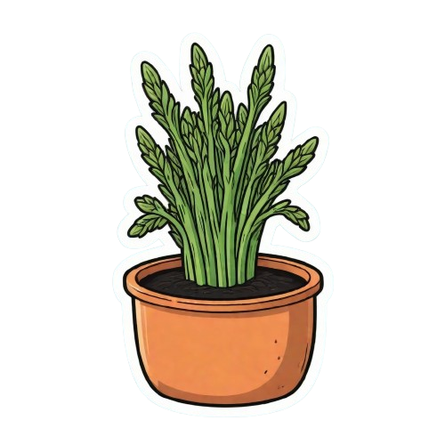

Know about me

| SCIENTIFIC NAME |
Asparagus officinalis |
| COMMON NAME |
Sparrow grass |
| HEIGHT |
40-60 inches |
| WIDTH |
0.5 inches |
| LEAVES COLOR |
brownish green |
| FLOWERS COLOR |
white |
Botanical Characteristics:
- Scientific Name: Asparagus officinalis, a perennial flowering plant species in the lily family.
- Growth Form: Grows from underground crowns, producing tender spears in spring and feathery foliage later.
- Root System: Has deep, fibrous roots that store energy for future spear production.
Varieties:
- Mary Washington: A popular, disease-resistant heirloom variety with green spears.
- Purple Passion: Known for its sweet flavor and purple-colored spears.
- Jersey Giant: A high-yield, male-dominant hybrid variety with thick green stalks.
Benefits:
- nutrient-rich: High in fiber, vitamins A, C, E, and K, and folate.
- Antioxidant Properties: Contains glutathione, which supports detoxification and immune health.
- Digestive Health: Acts as a natural diuretic and promotes gut health due to inulin.
Care Instructions:
- sunlight: Requires full sun (6%E2%80%938 hours daily) for optimal growth.
- soil: Prefers well-drained, sandy or loamy soil with pH 6.5%E2%80%937.5.
- watering: Needs regular watering, especially in the first two years to establish roots.
- maintenance: Keep weed-free; mulch to retain moisture and control weeds.